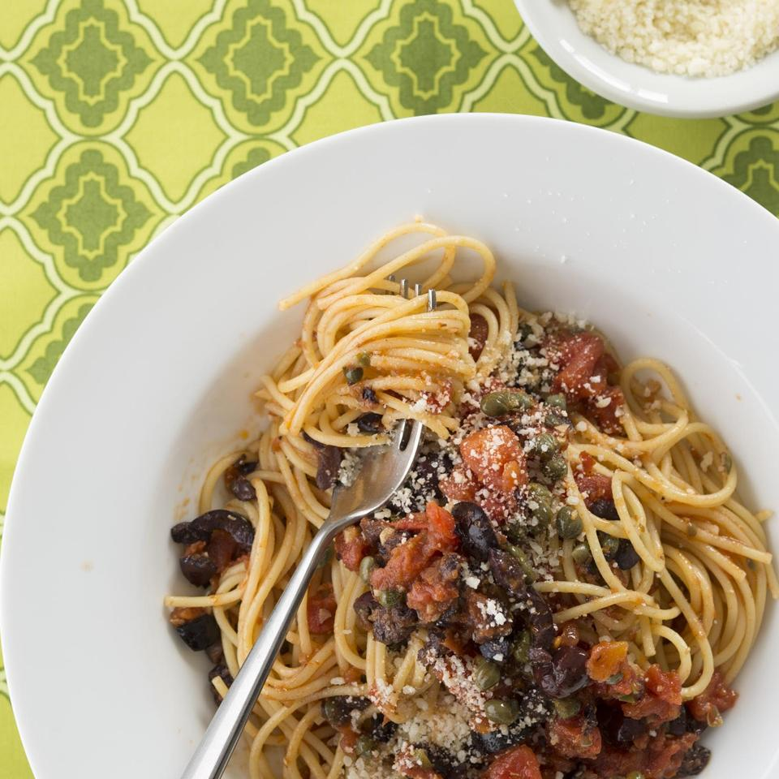

Pasta Puttanesca

Description
Puttanesca is a hearty tomato sauce with a rich texture and a spicy kick. Pair it with hot pasta, and a fresh tasting, wholesome dinner will be on the table in no time.
Anchovies are the main staple of this dish, so while you can leave them out if anchovies aren't to your taste, the dish's flavour is at its peak when they are included. They melt right into the sauce for that authentic Italian flavour.
Serves 4
Ingredients
- 1/3 cup olive oil
- 3 cloves garlic, minced
- 1/4 tsp red pepper flakes, or to taste
- 1 tsp dried oregano
- 3 anchovy fillets, chopped, or more to taste
- 2(15 ounce) cans diced tomatoes, drained
- 1(8 ounce) package spaghetti
- 1/2 cup chopped pitted kalamata olives
- 1/4 cup capers, chopped
Steps
- Fill a large pot with water. Bring to a rolling boil over high heat.
- As the water heats, pour the olive oil into a cold skillet and stir in the garlic. Turn heat to medium-low and cook and stir until the garlic is fragrant and begins to turn a golden color, 1 to 2 minutes. Stir in the red pepper flakes, oregano, and anchovies. Cook until anchovies begin to break down, about 2 minutes.
- Pour tomatoes into skillet, turn heat to medium-high, and bring sauce to a simmer. Use the back of a spoon to break down tomatoes as they cook. Simmer until sauce is reduced and combined, about 10 minutes.
- Meanwhile, cook the pasta in the boiling water. Drain when still very firm to the bite, about 9 minutes. Reserve 1/2 cup pasta water.
- Stir the olives and capers into the sauce; add pasta and toss to combine.
- Toss pasta in sauce until pasta is cooked through and well coated with sauce, about 1 minute. If sauce becomes too thick, stir in some of the reserved pasta water to thin.